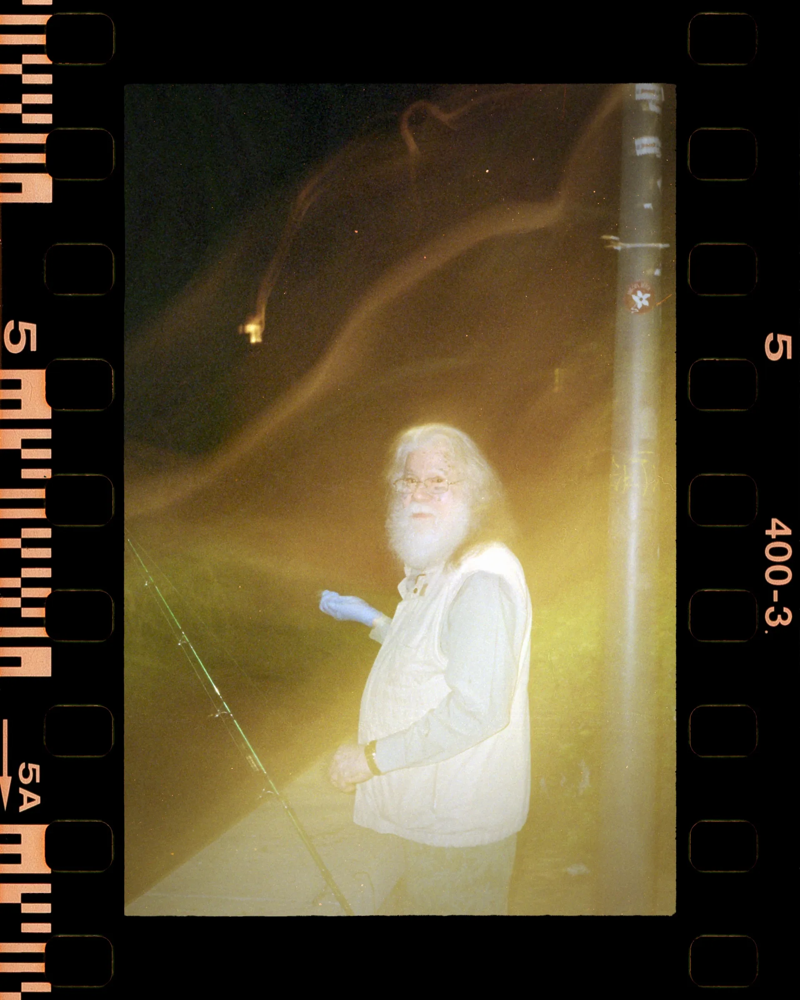
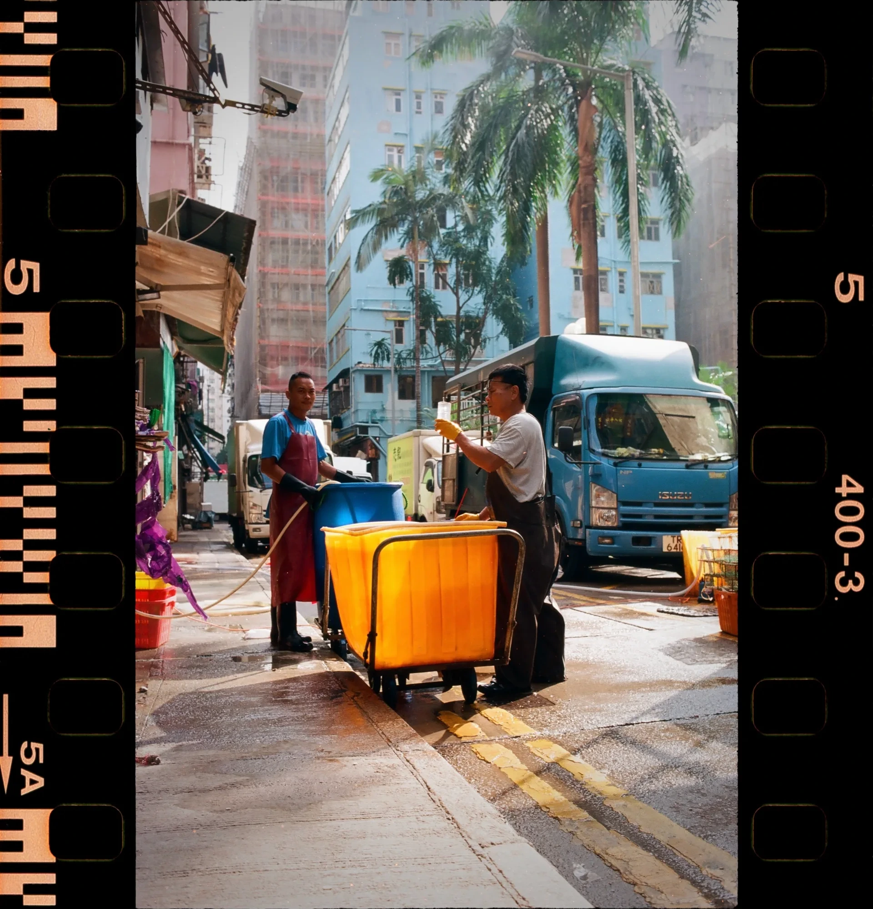
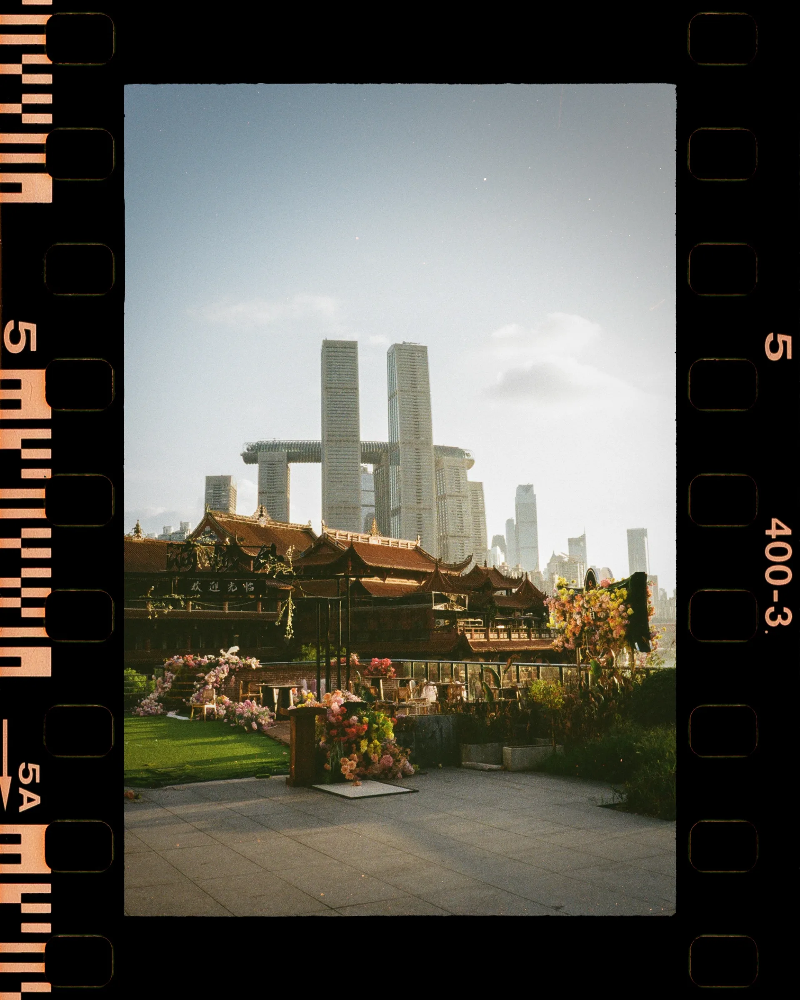
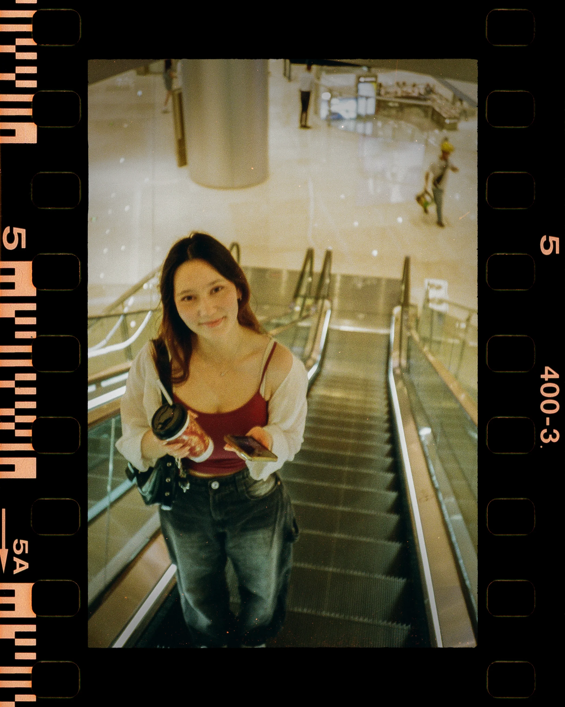

Wies Verbeke
Work
Analog
About
Work
Analog
About

View project →
Street Photography
— Series I

View project →
Hong Kong on Film
— Series II

View project →
Landscapes
— Series III

View project →
Portraits
— Series IV